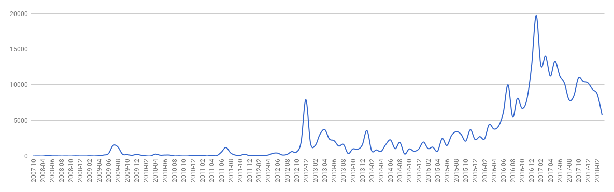

I downloaded a copy of all the data Facebook has on me (or…at least this is all they claim to have on me), and analyzed it a bit. I was mostly curious about the frequency of messages, friend requests, and timeline posts over time, because I wondered if it would match up with various life events.
To download your data, go to your settings page, and then they will email you the download link when it’s ready. Randomly clicking through the old data is a minefield of embarrassing high school messages, old posts from long lost friends, and photos you forgot you ever uploaded.
The data is structured into HTML pages instead of an easy data format, so I wrote some scripts to convert these pages to CSV for easier analyzing. You can view my scripts here. Even though there are definitely better tools for the job than Ruby, I love programming in Ruby so I chose Ruby with the Nokogiri gem. To make these charts, I just pasted the CSV files into Google Sheets and then inserted some charts.
I don't really post a whole lot on Facebook and I mostly use it as a primary means of messaging my friends, so I was mostly interested in the message data. Once I had my CSV file of the relevant data, I plotted the volume of messages sent and received over time. In high school I mainly used text messaging to communicate with my friends, and as we all got smart phones, we slowly transitioned to Facebook Messenger, and this data reflects that.
I noticed a few interesting data points that lined up with life events at the time. August 2012 was when I began college and the volume picks up here as I made new friends. There's a big spike December 2012, which was when my new friends and I went on winter break for 3 weeks. We would stay up until 4 a.m. chatting on Facebook and Skyping until school resumed again. There's a similar spike December 2013, and during the summer of 2014 when I was interning in a different city than my friends and family. When I began working full-time in an office August 2016, my message volume has a huge spike as my other working friends and I kept Messenger open in a tab at work to chat throughout the day!
Next I was interested in the breakdown between who I messaged most often. This is definitely weighted more towards my college friends than my high school friends.
This is a simple graph of number of friend requests sent/received per month. It's pretty steady except for a few spikes. The biggest spike is when I started college August 2012. The next big spike after that, February 2014, was when I met my intern class for the summer and we all added each other on Facebook.
This breakdown doesn't show a huge difference from year to year. 2010 and 2011 (the years in high school after I got my driver's license, causing my social circle to expand), 2012 (the year I started college), and 2017 (a bunch of coworkers added me) have the most.
The timeline page from Facebook is not organized into different categories. Events, posts, photos, and statuses all have the same CSS classes and there's not an easy way to differentiate them, so the next data just captures everything lumped into one group.
This is the frequency per month/year. During high school I would post so many photos, and that's reflected here with the big spikes in 2009-2012. You can also see a lot of activity during the summer of 2016, when I was in Taiwan and would post updates and photos more often. Lately as I've used Facebook less and less, it tapers off.
Questions? Comments? Don't hesitate to contact me!